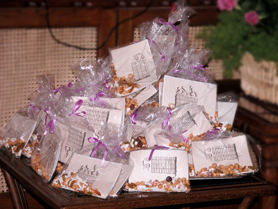

پذيرش > كوچه به كوچه > سرنوشت مشکل گشا های حقوقی/محبوبه عباسقلی زاده


 سرنوشت مشکل گشا های حقوقی/محبوبه عباسقلی زاده سرنوشت مشکل گشا های حقوقی/محبوبه عباسقلی زاده
2 تیر 1386 - - نسخه قابل چاپ
جشن 22 خرداد، روز همبستگی زنان ایران است. گوشه و کنار سالن پذیرایی سینی هایی گذاشته اند پر از کیسه های پلاستیکی کوچکی که داخلش یک جزوه کوچک کمپین و یک مشت آجیل مشکل گشاست.

در فاصله احوالپرسی ها، شم ناشری ام شروع به محاسبه می کند: تا به حال چند تا از این جزوه ها چاپ شده؟! چاپ که چه عرض کنم فتوکپی. به خودم می گویم حتما یک چیزی بیشتر از 100000 هزار تا، اگر که فرض کنیم آمار توزیع جزوه ها بیشتر از تعداد امضا کنندگان است. اما این را هم مطمئنم که اگر کسانی که روز اول داشتند این جزوه را طراحی می کردند می دانستند که بناست در این تیتراژ وسیع تکثیرش کنند «هنگ» می کردند. نه آنها، که حتی ناشران آموزش و پرورش هم به راحتی از عهده نشر و توزیع اینطور چیزها برنمی آیند.
می توانم حدس بزنم که تکثیر این جزوه ها تدریجی بوده و نه حتی توسط یک یا چند نفر. حتی در این مورد که نسخه اوریجینال دست چه کسی است حدس می زنم برای خود بچه های کمپین هم یک معماست از بس که این جزوه ها از روی هم تکثیر شده!
و اما آجیل مشکل گشا! آن هم توسط فمنیست هایی که میانه چندانی با سنت های «سفره» ای ندارند، نوعی ابتکار پست مدرن است.این را منصوره که مجری برنامه است با خنده اعلام می کند: «این بسته های مشکل گشا که به سبک پست مدرن تهیه شده هدیه هایی است که بچه ها برای امروز آماده کرده اند.» منصوره می خواهد که ما – به رسم عادت سفره ها- چند تایی از اینها دریافت کرده و دربین دوستان و آشنایان پخش کنیم.
خاطره مرا هدایت می کند به صدها پدیده مختلف فرهنگی و بومی تاریخی امان که مرتب دچار تحول پیام های نمادین شده اند. در اینجا به یاد روش های ارتباطی که در آموزش های «ان جی اویی» به کار گرفته می شود، می افتم: در کار مردمی همیشه باید به دنبال روش هایی باشیم که بتواند فاصله پیام را با مخاطب کوتاه کند. با زبان و اصطلاحات مردمی حرف زدن، ازطریق آداب و سنن آنها پیام های روشنگرانه را ابلاغ کردن، به اعتقادات آنها احترام گذاشتن و در عین حال با استفاده از بخش های انسانی همان اعتقادات به تبلیغ حقوق و مطالبات زنان پرداختن و...
به یاد «سفره» های قبل از انقلاب می افتم که شده بود محلی برای مبارزه با شاه و همان سفره ها در شرایط فعلی که توسط مبلغان سازمان یافته حکومتی تغذیه می شود... و اما زنان شرکت کننده در سفره ها که آدمهایی اند اغلب با دل هایی پر از غم و غصه های خانوادگی و اعتقادی بی آلایش به حل مشکلاتشان از طریق انجام مناسک مذهبی، و تنها محیط اجتماعی شدنشان همین هیئت ها و سفره هاست. دیگر کاری ندارند به اینکه ملغغ مربوطه به فکر توانمندی آنهاست یا وابسته کردنشان. آجیل مشکل گشا هم پیام همین مجالس است که خاصیتی چهره به چهره دارد و لختی وقت را با لذت خوردن خوراکی متبرک و شنیدن درد دل های همسایه پر می کند.
در فکر فرو رفته ام که این جا هم ما در یک جلسه خانگی نشسته ایم به وسعت فضای مجازی و گویا همین جاست قلمرو دست نیافتنی زنان که از درونش شبکه های اجتماعی رشد می کند. عرصه های عمومی جدید متولد می شود.
حالا جلسه تمام شده است. منم و شش بسته مشکل گشای حقوقی که هنگام رفتن از میزبانان مجلس دریافت کرده ام. و هرکدام داستانی داشت در این چند روز:
بعد از جلسه با شادی می روم که در جایی ارزان بنشینیم و به بهانه چای خوردن، جلسه ای داشته باشیم. این کار ماست در اوقات بی دفتر و دستک بودن. کافه «ماگ» همین نزدیکی است و طبقه بالایش همیشه دنج و خلوت است. هنوز جابجا نشده ایم که دو خانم جوان هم در میز بغل دستی ما می نشینند. ماییم و آنها و حس آشنایی که این وسط ردوبدل می شود. چند بار به هم نگاه می کنیم و من ناخودآگاه دستم را به کیفم برده و دو تا از بسته ها را به آنها می دهم. می گویم جایی بودم و اینها هدیه آنجاست بفرمایید. با گرمی بسته ها را می گیرند و تشکر می کنند. از زیر چشم می بینم که آنها را باز کرده و آجیل ها را می ریزند توی بشقاب میوه خوری و دفترچه را ورق می زنند. می گویند ما امضا کرده ایم و شما را هم می شناسیم. خرداد 84 هم جلوی دانشگاه بودیم. من و شادی هر دو به هم نگاه می کنیم و می خندیم. هر دو با هم می گوییم خیلی جالب است که «روز 22 خرداد آشنای 22 خردادی هم ببینی» و دوباره هر میزی به حرف خودش مشغول می شود. بازهم یکی از آنها که خودش را شهره معرفی می کند در حالی که دفتر چه را نشان می دهد می پرسد من نفهمیدم که اولویت حقوقی یعنی چه؟ همه مسائل حقوقی زنان اولویت دارد. اینجا دیگر شادی که وکیل است بحث را دستش می گیرد. حدود نیم ساعتی بحث ادامه پیدا می کند و انتهای بحث دوست شهره که مادرش درگیر ارث است نتیجه می گیرد که اولویت حقوقی زنان ارث است و خود شهره که در آستانه ازدواج است و می خواهد به خارج برود، حق طلاق و اسکان را اولویت خودش می داند چون احتیاط می کند که نکند درآینده خدا نکرده شوهرش او را اجبار به ماندن در ایران کند و بخواهد با قوانین ایران طلاق بگیرد.
ما آن روز نتواستیم جلسه خودمان را داشته باشیم چون ادامه وقتمان به مشاوره های حقوقی برای شرایط ضمن عقد، نگاه های سلیقه ای دفاتر ازدواج و اجبار خانواده به مراسم عروسی و دردسرهای آن برای جوانان گذشت.
هنوز چهار بسته مشکل گشای حقوقی باقی مانده بود. خانه که آمدم همه را در آورده و روی میز انداختم. دخترهایم با تعجب پرسیدند: «اینها دیگر چیست؟!»
گفتم: «ابتکار جالب بچه های کمپین یک میلیون است، بخورید و بخوانید اما فقط یک بسته.»
مریم، دختر بزرگتم را که می بینم که دارد با دقت جزوه را می خواند. برآیند این همه تبعیض حقوقی در یک دفترچه، چهره اش را متفکر کرده است و گاهی با صدای بلند بعضی بخش ها را برای همه می خواند. فردایش می گوید که یکی از بسته های مشکل گشا را می برد برای مادر همسر آینده اش. می خواهد به طور غیر مستقیم او را آماده کند برای حق و حقوقی که در هنگام عقد خواهد خواست.
جمعه است و دو تا بیشتر از بسته های مشکل گشای حقوقی باقی نمانده. جمعه ها اغلب خانه مادرم جمع می شویم، هنگام رفتن بسته ها را می اندازم ته کیفم.
خاله هم آنجاست که معلم بازنشسته است و خواهرم که همسر شهید است و پدرم که هیچ وقت نماز خواندن در مسجد و وعظ پس از جماعت را از دست نداده است.
وقت چای است، بسته ها را در می آورم. یکی را می دهم به مادرم و آن یکی را به خاله ام. مادرم آجیل مشکل گشا را خوب می شناسد و وقتی می گویم محتوای دفترچه در مورد چیست زیاد غریبگی نمی کند. دردسرهای طلاق دو تن از دخترانش را تجربه کرده و دعواهای حقوقی سر حضانت نوه هایش و حق و حقوق دخترانش که سر درخواست طلاق به پای رضایت طرف مقابل قربانی شد. حتی مشکلاتی که آن یکی دخترش که همسر شهید است بخاطر ولایت پسرش با پدربزرگ پدری داشته را هم هنوز به یاد دارد. بشقابی را جلو می کشد و در حالی که آجیل ها را توی آن می ریزد از ته دل صلوات می فرستد و از خدا می خواهد که هیچ کسی مشکل حقوق نداشته باشد.
مریم به چهره پرسشگر خاله جواب می دهد: «خاله جون توی این دفترچه نوشته که چطوری می شه که زن جوونی که یک جنین پسر 5 ماهه بارداره وقتی تصادف می کنه و فوت می کنه نصف جنینی که تو شکمش داشته دیه می گیره»
صدای آمرانه پدرم مرا به خود می آورد: «توی این دفترچه ها چی نوشته؟!!!» یاد لحن بازجوهایم می افتم: «از حق و حقوق زن ها می گوید، از حق طلاق و دیه و حضانت و ارث و اینها.»
سرش را با تاسف تکان می دهد و من در چشمهایش می خوانم که از واعظ مسجد چیزهایی شنیده باشد: «دخترم اسلام سعادت شما را می خواهد چرا حرف های خلاف اسلام می زنید» مجبور می شوم بگویم : «تو این دفترچه که فتوا صادر نشده فقط موضوعات زنان امروزی باز شده و ته اش هم می گه که درخواست تغییرات حقوقی را امضا کنید تا هر کسی که مسئول این تغییرات است از عالم و فقیه و نماینده مجلس بدونند که موضوعات و مشکلات زنان چیه . تا به فقیه ارائه مشکل و موضوع نشه که نمی یاد فتوای جدید صادر کنه.»
همیشه بحث های تخصصی فقهی با پدرم موثر بوده و من هم یاد گرفته ام که به جای دیالوگ فمنیستی، از این شیوه استفاده کنم.
خاله ام که دارد دفترچه را می خواند، می پرسد: «خوب حالا ما باید چکار کنیم با این دفترچه ها؟» برایش داستان کمپین یک میلیون امضا را می گویم. می گوید: «این فرم ها کی پخش شده که دست ما نرسیده» و هل می شود که این فرم ها دولتی است و به دلیل بازنشسته بودن از قافله فرم های دولتی جا مانده. اما وقتی می گویم که «این فرم ها توسط گروه های مختلف زنان و اعضای کمپین منتشر می شود»؛ شروع می کند مشکلات حقوقی معلم ها را گفتن و اینکه چگونه با سیصدهزارتومن بازنشسته شده و همسایه بانکدارش با 40 میلیون و این که دولت هیچ توجهی به درخواست های ما نکرد و نتیجه اعتراض معلم ها را هم که دیدیم.
با خودم فکر می کنم مثل این که حاجت های مردم از این آجیل های مشکل گشا تمامی ندارد.
ارسال به
بالاترین
،
توییتر
،
فریندفید
،
فیسبوک
در همين بخش :
 روايت بيست و پنجمين شهريور / نرگس طیبات روايت بيست و پنجمين شهريور / نرگس طیبات
وقتی آتش خاموش شود/فرشته نوبخت
آن گاه که زن شدم / ویژه نامه 8 مارس 1391
چیزی زیر پوست این شهر می جوشد / دلارام علی
گرسنگی / وبلاگ سیب و سرگشتگی
ديگر بخش ها :
طرح یک میلیون امضا
|
مقالات
|
سایت نوشته ها
|
اخبار
|
گزارش كمپين
|
گفت و گو
|
علیه سکوت
|
كوچه به كوچه
|
نامه های شما
|
گزارش ویژه
|
گفتگو با اعضا
|
ویژه سالگرد کمپین
|
تصویر برابری
|
دل آرام علی
|
تریبون
|
مقالات
|
تاریخ شفاهی
|
خارج از چارچوب
|
کتابخانه
|
درباره کمپین
|
کمپین در شهرها
|
کمپین در بند
|
صدای تغییر
|
ویژه 22 خرداد
|
لایحه حمایت از خانواده
|
گالری
|
عشا مومنی
|
امیر یعقوبعلی
|
خدیجه مقدم
|
راحله عسگری زاده و نسیم خسروی
|
پروین اردلان،جلوه جواهری، مریم حسین خواه، ناهید کشاورز
|
زینب پیغمبرزاده
|
سعیده امین، سارا ایمانیان، محبوبه حسین زاده، ناهید کشاورز و همایون نامی
|
احترام شادفر
|
نسیم سرابندی زاده،فاطمه دهدشتی
|
وبلاگ مهمان
|
پرونده خرم آباد
|
دستگیری ها
|
مریم مالک
|
پرستو اللهیاری
|
مهرنوش اعتمادی
|
سمیه رشیدی
|
Other Languages
|
همراهان
|
«فراخوان کمپین ده روز با بهاره هدایت»
| English
|